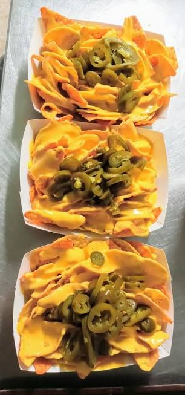

Nachos con Queso y Jalapeños

Los nachos con queso y jalapeños son uno de los snacks más populares para reuniones, fiestas o una noche de películas. Se preparan en pocos minutos y combinan el crujiente de los nachos con queso derretido y el toque picante de los jalapeños.